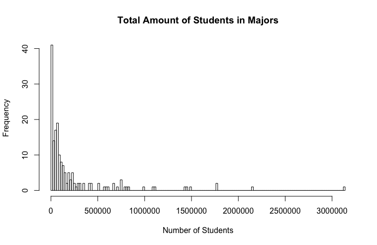

Hypothesis
The total is defined as the amount of people that are majoring in a specific major, such as Computer Science, Nursing, Pharmacology, Geological and Geophysical Engineering, and so on. The total amount of students majoring in a specific kind of major is extremely valuable to determine the most popular type of degree and the least popular type of degree. The mean, standard deviation, skewness and kurtosis are:
Mean: 230256.6
Standard Deviation: 422068.5
Skewness: 3.591402
Kurtosis: 15.98407
BoxPlot and Histogram of the data "Total"

The boxplot used to plot the column Total of all-ages.csv is essential to understand the amount of students who ended up with pursing a major. It appears as if the boxplot was the one and only graph that truly captured the data's purpose. One can easily find the outliers, datum detached from the rest of the data that looked inconsistent and it appears that the graph captured 24 outliers, data that exceeded an amount that other data did not. These 24 outliers were the top 24 majors that were popular among other majors.
The data's histogram has a skewness of 3.591402 and a kurtosis of 15.98. The kurtosis's value appears to categorize the data as a platykurtic and a positive skewness which let me to believe that the data is slightly skewed to the right. Although, it appears that the graph has a random distribution. My assumption is that the histogram didn't help as much as i thought it would've had.
Computing a confidence interval for the "Total" # 1:
Knowing that the mean of the data "Total" is mean = 230256.6, the standard deviation = 422068.5, and the dataset has a length of n = 173. We can compute the margin of error by adding/subtracting the mean from the confidence level times the standard deviation over the square root of n (230256.6 ± 1.959964 * 422068.5/sqrt(173)) which gives us the range where the true mean lands on: [167362.8, 293150.4].
What is a "Pareto chart"?
The Pareto principle which is commonly reffered to as the 80/20 rule or The Law of The Vital Few was first noted by an Italian Economist Vilfredo Pareto who showed that approximately 80% of the land in Italy was owned by 20% of the population and to his surprise, when surveying other countries, had a similar distribution applied. Thus, the Pareto Principle has been applied to many problems. I will apply the Pareto chart in order to grasp an understanding of what the categorical variable in my AllAges dataset consist of.
The Pareto chart for my Quantative data: Major

The pareto chat is quite different than other graphs. The differences can be spot on if one where to look at the two contrasting y-variables, the frequency on the left-side of the graph and the commulative percentage on the right-side of the graph. The commulative percentage expresses the frequency distribution within each interval. The frequency on the left side of the graph summarizes the highest amount of majors in that particularly major category. My pareto chart shows 14 different kind of major categories. In each major categories, there are different kind of studies that that particularly major offers. For example, a Computer And Mathematics major has 11 different kind of studies one might be able to major such as Computer Science, Applied Mathematics, Mathematics, etc...